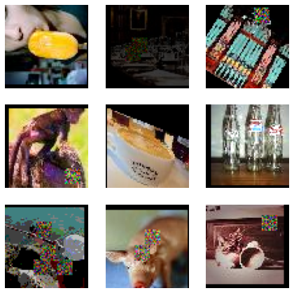
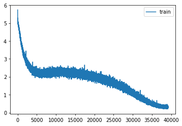

import os
os.environ['CUDA_VISIBLE_DEVICES']='1'Tiny Imagenet
import shutil,timm,os,torch,random,datasets,math
import fastcore.all as fc, numpy as np, matplotlib as mpl, matplotlib.pyplot as plt
import k_diffusion as K, torchvision.transforms as T
import torchvision.transforms.functional as TF,torch.nn.functional as F
from torch.utils.data import DataLoader,default_collate
from pathlib import Path
from torch.nn import init
from fastcore.foundation import L
from torch import nn,tensor
from operator import itemgetter
from torcheval.metrics import MulticlassAccuracy
from functools import partial
from torch.optim import lr_scheduler
from torch import optim
from torchvision.io import read_image,ImageReadMode
from glob import glob
from fastAIcourse.datasets import *
from fastAIcourse.conv import *
from fastAIcourse.learner import *
from fastAIcourse.activations import *
from fastAIcourse.init import *
from fastAIcourse.sgd import *
from fastAIcourse.resnet import *
from fastAIcourse.augment import *
from fastAIcourse.accel import *
from fastAIcourse.training import *from fastprogress import progress_bartorch.set_printoptions(precision=5, linewidth=140, sci_mode=False)
torch.manual_seed(1)
mpl.rcParams['figure.dpi'] = 70
set_seed(42)
if fc.defaults.cpus>8: fc.defaults.cpus=8Data processing
path_data = Path('data')
path_data.mkdir(exist_ok=True)
path = path_data/'tiny-imagenet-200'url = 'http://cs231n.stanford.edu/tiny-imagenet-200.zip'
if not path.exists():
path_zip = fc.urlsave(url, path_data)
shutil.unpack_archive('data/tiny-imagenet-200.zip', 'data')bs = 512class TinyDS:
def __init__(self, path):
self.path = Path(path)
self.files = glob(str(path/'**/*.JPEG'), recursive=True)
def __len__(self): return len(self.files)
def __getitem__(self, i): return self.files[i],Path(self.files[i]).parent.parent.nametds = TinyDS(path/'train')path_anno = path/'val'/'val_annotations.txt'
anno = dict(o.split('\t')[:2] for o in path_anno.read_text().splitlines())class TinyValDS(TinyDS):
def __getitem__(self, i): return self.files[i],anno[os.path.basename(self.files[i])]vds = TinyValDS(path/'val')class TfmDS:
def __init__(self, ds, tfmx=fc.noop, tfmy=fc.noop): self.ds,self.tfmx,self.tfmy = ds,tfmx,tfmy
def __len__(self): return len(self.ds)
def __getitem__(self, i):
x,y = self.ds[i]
return self.tfmx(x),self.tfmy(y)id2str = (path/'wnids.txt').read_text().splitlines()
str2id = {v:k for k,v in enumerate(id2str)}xmean,xstd = (tensor([0.47565, 0.40303, 0.31555]), tensor([0.28858, 0.24402, 0.26615]))def tfmy(y): return tensor(str2id[y])def denorm(x): return (x*xstd[:,None,None]+xmean[:,None,None]).clip(0,1)all_synsets = [o.split('\t') for o in (path/'words.txt').read_text().splitlines()]
synsets = {k:v.split(',', maxsplit=1)[0] for k,v in all_synsets if k in id2str}def tfm_batch(b, tfm_x=fc.noop, tfm_y = fc.noop): return tfm_x(b[0]),tfm_y(b[1])act_gr = partial(GeneralRelu, leak=0.1, sub=0.4)
iw = partial(init_weights, leaky=0.1)nfs = (32,64,128,256,512,1024)opt_func = partial(optim.AdamW, eps=1e-5)nbks=(3,3,2,2,1)def conv(ni, nf, ks=3, stride=1, act=nn.ReLU, norm=None, bias=True):
layers = []
if norm: layers.append(norm(ni))
if act : layers.append(act())
layers.append(nn.Conv2d(ni, nf, stride=stride, kernel_size=ks, padding=ks//2, bias=bias))
return nn.Sequential(*layers)
def _conv_block(ni, nf, stride, act=act_gr, norm=None, ks=3):
return nn.Sequential(conv(ni, nf, stride=1 , act=act, norm=norm, ks=ks),
conv(nf, nf, stride=stride, act=act, norm=norm, ks=ks))
class ResBlock(nn.Module):
def __init__(self, ni, nf, stride=1, ks=3, act=act_gr, norm=None):
super().__init__()
self.convs = _conv_block(ni, nf, stride, act=act, ks=ks, norm=norm)
self.idconv = fc.noop if ni==nf else conv(ni, nf, ks=1, stride=1, act=None, norm=norm)
self.pool = fc.noop if stride==1 else nn.AvgPool2d(2, ceil_mode=True)
def forward(self, x): return self.convs(x) + self.idconv(self.pool(x))
def res_blocks(n_bk, ni, nf, stride=1, ks=3, act=act_gr, norm=None):
return nn.Sequential(*[
ResBlock(ni if i==0 else nf, nf, stride=stride if i==n_bk-1 else 1, ks=ks, act=act, norm=norm)
for i in range(n_bk)])
def get_dropmodel(act=act_gr, nfs=nfs, nbks=nbks, norm=nn.BatchNorm2d, drop=0.2):
layers = [nn.Conv2d(3, nfs[0], 5, padding=2)]
layers += [res_blocks(nbks[i], nfs[i], nfs[i+1], act=act, norm=norm, stride=2)
for i in range(len(nfs)-1)]
layers += [act_gr(), norm(nfs[-1]), nn.AdaptiveAvgPool2d(1), nn.Flatten(), nn.Dropout(drop)]
layers += [nn.Linear(nfs[-1], 200, bias=False), nn.BatchNorm1d(200)]
return nn.Sequential(*layers).apply(iw)metrics = MetricsCB(accuracy=MulticlassAccuracy())
cbs = [DeviceCB(), metrics, ProgressCB(plot=True), MixedPrecision()]aug_tfms = nn.Sequential(T.Pad(4), T.RandomCrop(64),
T.RandomHorizontalFlip(),
T.TrivialAugmentWide())
norm_tfm = T.Normalize(xmean, xstd)
erase_tfm = RandErase()from PIL import Imagedef tfmx(x, aug=False):
x = Image.open(x).convert('RGB')
if aug: x = aug_tfms(x)
x = TF.to_tensor(x)
x = norm_tfm(x)
if aug: x = erase_tfm(x[None])[0]
return xtfm_tds = TfmDS(tds, partial(tfmx, aug=True), tfmy)
tfm_vds = TfmDS(vds, tfmx, tfmy)dls = DataLoaders(*get_dls(tfm_tds, tfm_vds, bs=bs, num_workers=8))def get_model(): return get_dropmodel(drop=0.1)learn = TrainLearner(get_model(), dls, F.cross_entropy, cbs=[SingleBatchCB(), DeviceCB()])
learn.fit(1)
xb,yb = learn.batch
show_images(denorm(xb.cpu())[:9], imsize=2.5)
epochs = 200
lr = 0.1
tmax = epochs * len(dls.train)
sched = partial(lr_scheduler.OneCycleLR, max_lr=lr, total_steps=tmax)
xtra = [BatchSchedCB(sched)]
learn = Learner(get_model(), dls, F.cross_entropy, lr=lr, cbs=cbs+xtra, opt_func=opt_func)learn.fit(epochs)| accuracy | loss | epoch | train |
|---|---|---|---|
| 0.025 | 5.057 | 0 | train |
| 0.043 | 4.807 | 0 | eval |
| 0.049 | 4.768 | 1 | train |
| 0.065 | 4.521 | 1 | eval |
| 0.079 | 4.500 | 2 | train |
| 0.111 | 4.182 | 2 | eval |
| 0.116 | 4.207 | 3 | train |
| 0.159 | 3.827 | 3 | eval |
| 0.152 | 3.950 | 4 | train |
| 0.193 | 3.615 | 4 | eval |
| 0.185 | 3.721 | 5 | train |
| 0.242 | 3.316 | 5 | eval |
| 0.220 | 3.516 | 6 | train |
| 0.286 | 3.062 | 6 | eval |
| 0.246 | 3.361 | 7 | train |
| 0.306 | 2.962 | 7 | eval |
| 0.270 | 3.209 | 8 | train |
| 0.309 | 3.030 | 8 | eval |
| 0.293 | 3.089 | 9 | train |
| 0.344 | 2.780 | 9 | eval |
| 0.312 | 2.971 | 10 | train |
| 0.355 | 2.753 | 10 | eval |
| 0.335 | 2.863 | 11 | train |
| 0.384 | 2.627 | 11 | eval |
| 0.350 | 2.779 | 12 | train |
| 0.381 | 2.646 | 12 | eval |
| 0.365 | 2.699 | 13 | train |
| 0.388 | 2.619 | 13 | eval |
| 0.379 | 2.624 | 14 | train |
| 0.409 | 2.542 | 14 | eval |
| 0.390 | 2.571 | 15 | train |
| 0.410 | 2.514 | 15 | eval |
| 0.405 | 2.504 | 16 | train |
| 0.405 | 2.563 | 16 | eval |
| 0.410 | 2.461 | 17 | train |
| 0.426 | 2.462 | 17 | eval |
| 0.419 | 2.422 | 18 | train |
| 0.442 | 2.390 | 18 | eval |
| 0.427 | 2.378 | 19 | train |
| 0.451 | 2.348 | 19 | eval |
| 0.434 | 2.346 | 20 | train |
| 0.413 | 2.565 | 20 | eval |
| 0.439 | 2.311 | 21 | train |
| 0.371 | 2.858 | 21 | eval |
| 0.447 | 2.283 | 22 | train |
| 0.390 | 2.787 | 22 | eval |
| 0.449 | 2.278 | 23 | train |
| 0.434 | 2.446 | 23 | eval |
| 0.452 | 2.255 | 24 | train |
| 0.444 | 2.351 | 24 | eval |
| 0.455 | 2.235 | 25 | train |
| 0.438 | 2.416 | 25 | eval |
| 0.458 | 2.231 | 26 | train |
| 0.457 | 2.326 | 26 | eval |
| 0.459 | 2.215 | 27 | train |
| 0.455 | 2.349 | 27 | eval |
| 0.464 | 2.204 | 28 | train |
| 0.442 | 2.400 | 28 | eval |
| 0.464 | 2.200 | 29 | train |
| 0.344 | 3.163 | 29 | eval |
| 0.467 | 2.188 | 30 | train |
| 0.403 | 2.749 | 30 | eval |
| 0.463 | 2.205 | 31 | train |
| 0.407 | 2.692 | 31 | eval |
| 0.465 | 2.196 | 32 | train |
| 0.400 | 2.628 | 32 | eval |
| 0.462 | 2.206 | 33 | train |
| 0.467 | 2.278 | 33 | eval |
| 0.465 | 2.202 | 34 | train |
| 0.452 | 2.303 | 34 | eval |
| 0.462 | 2.203 | 35 | train |
| 0.452 | 2.377 | 35 | eval |
| 0.464 | 2.200 | 36 | train |
| 0.437 | 2.443 | 36 | eval |
| 0.465 | 2.207 | 37 | train |
| 0.436 | 2.428 | 37 | eval |
| 0.462 | 2.200 | 38 | train |
| 0.423 | 2.565 | 38 | eval |
| 0.463 | 2.210 | 39 | train |
| 0.357 | 3.034 | 39 | eval |
| 0.460 | 2.221 | 40 | train |
| 0.396 | 2.672 | 40 | eval |
| 0.459 | 2.225 | 41 | train |
| 0.450 | 2.317 | 41 | eval |
| 0.459 | 2.230 | 42 | train |
| 0.446 | 2.407 | 42 | eval |
| 0.458 | 2.237 | 43 | train |
| 0.397 | 2.638 | 43 | eval |
| 0.459 | 2.236 | 44 | train |
| 0.439 | 2.424 | 44 | eval |
| 0.456 | 2.243 | 45 | train |
| 0.445 | 2.336 | 45 | eval |
| 0.455 | 2.253 | 46 | train |
| 0.412 | 2.652 | 46 | eval |
| 0.453 | 2.254 | 47 | train |
| 0.380 | 2.760 | 47 | eval |
| 0.456 | 2.248 | 48 | train |
| 0.400 | 2.701 | 48 | eval |
| 0.453 | 2.256 | 49 | train |
| 0.409 | 2.691 | 49 | eval |
| 0.451 | 2.264 | 50 | train |
| 0.354 | 3.238 | 50 | eval |
| 0.452 | 2.267 | 51 | train |
| 0.434 | 2.413 | 51 | eval |
| 0.450 | 2.265 | 52 | train |
| 0.431 | 2.499 | 52 | eval |
| 0.452 | 2.260 | 53 | train |
| 0.447 | 2.352 | 53 | eval |
| 0.452 | 2.267 | 54 | train |
| 0.442 | 2.383 | 54 | eval |
| 0.447 | 2.271 | 55 | train |
| 0.405 | 2.598 | 55 | eval |
| 0.451 | 2.266 | 56 | train |
| 0.418 | 2.584 | 56 | eval |
| 0.450 | 2.268 | 57 | train |
| 0.419 | 2.531 | 57 | eval |
| 0.452 | 2.263 | 58 | train |
| 0.457 | 2.286 | 58 | eval |
| 0.451 | 2.262 | 59 | train |
| 0.351 | 3.086 | 59 | eval |
| 0.449 | 2.270 | 60 | train |
| 0.387 | 2.717 | 60 | eval |
| 0.456 | 2.243 | 61 | train |
| 0.427 | 2.532 | 61 | eval |
| 0.456 | 2.241 | 62 | train |
| 0.408 | 2.488 | 62 | eval |
| 0.455 | 2.249 | 63 | train |
| 0.405 | 2.625 | 63 | eval |
| 0.456 | 2.239 | 64 | train |
| 0.420 | 2.485 | 64 | eval |
| 0.456 | 2.237 | 65 | train |
| 0.411 | 2.518 | 65 | eval |
| 0.457 | 2.239 | 66 | train |
| 0.417 | 2.590 | 66 | eval |
| 0.457 | 2.230 | 67 | train |
| 0.354 | 2.970 | 67 | eval |
| 0.458 | 2.229 | 68 | train |
| 0.424 | 2.444 | 68 | eval |
| 0.460 | 2.219 | 69 | train |
| 0.347 | 2.992 | 69 | eval |
| 0.463 | 2.212 | 70 | train |
| 0.395 | 2.699 | 70 | eval |
| 0.463 | 2.207 | 71 | train |
| 0.339 | 3.148 | 71 | eval |
| 0.464 | 2.200 | 72 | train |
| 0.353 | 3.148 | 72 | eval |
| 0.464 | 2.201 | 73 | train |
| 0.434 | 2.422 | 73 | eval |
| 0.466 | 2.198 | 74 | train |
| 0.424 | 2.551 | 74 | eval |
| 0.471 | 2.179 | 75 | train |
| 0.393 | 2.710 | 75 | eval |
| 0.468 | 2.183 | 76 | train |
| 0.405 | 2.624 | 76 | eval |
| 0.465 | 2.194 | 77 | train |
| 0.417 | 2.578 | 77 | eval |
| 0.471 | 2.172 | 78 | train |
| 0.440 | 2.477 | 78 | eval |
| 0.471 | 2.164 | 79 | train |
| 0.392 | 2.752 | 79 | eval |
| 0.473 | 2.161 | 80 | train |
| 0.424 | 2.490 | 80 | eval |
| 0.473 | 2.164 | 81 | train |
| 0.420 | 2.547 | 81 | eval |
| 0.476 | 2.147 | 82 | train |
| 0.394 | 2.779 | 82 | eval |
| 0.475 | 2.155 | 83 | train |
| 0.400 | 2.747 | 83 | eval |
| 0.477 | 2.138 | 84 | train |
| 0.397 | 2.684 | 84 | eval |
| 0.481 | 2.134 | 85 | train |
| 0.442 | 2.428 | 85 | eval |
| 0.479 | 2.122 | 86 | train |
| 0.371 | 2.966 | 86 | eval |
| 0.482 | 2.123 | 87 | train |
| 0.410 | 2.634 | 87 | eval |
| 0.481 | 2.121 | 88 | train |
| 0.442 | 2.399 | 88 | eval |
| 0.482 | 2.111 | 89 | train |
| 0.461 | 2.331 | 89 | eval |
| 0.487 | 2.092 | 90 | train |
| 0.435 | 2.423 | 90 | eval |
| 0.487 | 2.092 | 91 | train |
| 0.414 | 2.691 | 91 | eval |
| 0.486 | 2.089 | 92 | train |
| 0.384 | 2.826 | 92 | eval |
| 0.493 | 2.062 | 93 | train |
| 0.462 | 2.385 | 93 | eval |
| 0.494 | 2.056 | 94 | train |
| 0.460 | 2.318 | 94 | eval |
| 0.493 | 2.056 | 95 | train |
| 0.418 | 2.625 | 95 | eval |
| 0.497 | 2.045 | 96 | train |
| 0.444 | 2.455 | 96 | eval |
| 0.495 | 2.043 | 97 | train |
| 0.484 | 2.159 | 97 | eval |
| 0.503 | 2.016 | 98 | train |
| 0.417 | 2.637 | 98 | eval |
| 0.504 | 2.016 | 99 | train |
| 0.384 | 2.846 | 99 | eval |
| 0.503 | 2.016 | 100 | train |
| 0.494 | 2.186 | 100 | eval |
| 0.504 | 2.008 | 101 | train |
| 0.436 | 2.522 | 101 | eval |
| 0.509 | 1.988 | 102 | train |
| 0.445 | 2.428 | 102 | eval |
| 0.508 | 1.986 | 103 | train |
| 0.488 | 2.131 | 103 | eval |
| 0.512 | 1.973 | 104 | train |
| 0.485 | 2.196 | 104 | eval |
| 0.515 | 1.959 | 105 | train |
| 0.486 | 2.231 | 105 | eval |
| 0.515 | 1.953 | 106 | train |
| 0.461 | 2.331 | 106 | eval |
| 0.522 | 1.924 | 107 | train |
| 0.477 | 2.287 | 107 | eval |
| 0.522 | 1.920 | 108 | train |
| 0.452 | 2.439 | 108 | eval |
| 0.522 | 1.921 | 109 | train |
| 0.493 | 2.176 | 109 | eval |
| 0.525 | 1.909 | 110 | train |
| 0.488 | 2.259 | 110 | eval |
| 0.528 | 1.894 | 111 | train |
| 0.477 | 2.305 | 111 | eval |
| 0.532 | 1.879 | 112 | train |
| 0.485 | 2.224 | 112 | eval |
| 0.536 | 1.862 | 113 | train |
| 0.485 | 2.244 | 113 | eval |
| 0.538 | 1.850 | 114 | train |
| 0.451 | 2.439 | 114 | eval |
| 0.540 | 1.842 | 115 | train |
| 0.482 | 2.231 | 115 | eval |
| 0.545 | 1.824 | 116 | train |
| 0.506 | 2.124 | 116 | eval |
| 0.548 | 1.803 | 117 | train |
| 0.461 | 2.427 | 117 | eval |
| 0.550 | 1.797 | 118 | train |
| 0.510 | 2.132 | 118 | eval |
| 0.555 | 1.774 | 119 | train |
| 0.504 | 2.124 | 119 | eval |
| 0.556 | 1.767 | 120 | train |
| 0.447 | 2.468 | 120 | eval |
| 0.560 | 1.748 | 121 | train |
| 0.472 | 2.329 | 121 | eval |
| 0.563 | 1.736 | 122 | train |
| 0.488 | 2.283 | 122 | eval |
| 0.568 | 1.714 | 123 | train |
| 0.466 | 2.340 | 123 | eval |
| 0.568 | 1.710 | 124 | train |
| 0.464 | 2.382 | 124 | eval |
| 0.574 | 1.686 | 125 | train |
| 0.451 | 2.466 | 125 | eval |
| 0.578 | 1.668 | 126 | train |
| 0.518 | 2.113 | 126 | eval |
| 0.584 | 1.647 | 127 | train |
| 0.495 | 2.331 | 127 | eval |
| 0.585 | 1.635 | 128 | train |
| 0.496 | 2.276 | 128 | eval |
| 0.589 | 1.619 | 129 | train |
| 0.452 | 2.528 | 129 | eval |
| 0.594 | 1.596 | 130 | train |
| 0.534 | 2.063 | 130 | eval |
| 0.596 | 1.587 | 131 | train |
| 0.522 | 2.098 | 131 | eval |
| 0.600 | 1.561 | 132 | train |
| 0.535 | 1.996 | 132 | eval |
| 0.606 | 1.536 | 133 | train |
| 0.539 | 1.994 | 133 | eval |
| 0.609 | 1.528 | 134 | train |
| 0.506 | 2.207 | 134 | eval |
| 0.610 | 1.513 | 135 | train |
| 0.515 | 2.208 | 135 | eval |
| 0.620 | 1.477 | 136 | train |
| 0.542 | 1.923 | 136 | eval |
| 0.625 | 1.460 | 137 | train |
| 0.521 | 2.127 | 137 | eval |
| 0.627 | 1.438 | 138 | train |
| 0.518 | 2.218 | 138 | eval |
| 0.635 | 1.417 | 139 | train |
| 0.515 | 2.151 | 139 | eval |
| 0.641 | 1.387 | 140 | train |
| 0.555 | 1.921 | 140 | eval |
| 0.646 | 1.364 | 141 | train |
| 0.526 | 2.154 | 141 | eval |
| 0.648 | 1.355 | 142 | train |
| 0.544 | 2.087 | 142 | eval |
| 0.654 | 1.325 | 143 | train |
| 0.558 | 1.904 | 143 | eval |
| 0.661 | 1.300 | 144 | train |
| 0.551 | 2.035 | 144 | eval |
| 0.667 | 1.281 | 145 | train |
| 0.537 | 2.157 | 145 | eval |
| 0.671 | 1.253 | 146 | train |
| 0.558 | 1.982 | 146 | eval |
| 0.678 | 1.233 | 147 | train |
| 0.553 | 2.052 | 147 | eval |
| 0.682 | 1.216 | 148 | train |
| 0.547 | 2.070 | 148 | eval |
| 0.690 | 1.180 | 149 | train |
| 0.571 | 1.968 | 149 | eval |
| 0.699 | 1.144 | 150 | train |
| 0.578 | 1.882 | 150 | eval |
| 0.702 | 1.136 | 151 | train |
| 0.574 | 1.972 | 151 | eval |
| 0.711 | 1.098 | 152 | train |
| 0.571 | 1.981 | 152 | eval |
| 0.716 | 1.073 | 153 | train |
| 0.589 | 1.899 | 153 | eval |
| 0.725 | 1.044 | 154 | train |
| 0.561 | 2.112 | 154 | eval |
| 0.728 | 1.036 | 155 | train |
| 0.592 | 1.967 | 155 | eval |
| 0.733 | 1.005 | 156 | train |
| 0.567 | 2.035 | 156 | eval |
| 0.741 | 0.978 | 157 | train |
| 0.573 | 2.003 | 157 | eval |
| 0.749 | 0.947 | 158 | train |
| 0.599 | 1.874 | 158 | eval |
| 0.755 | 0.929 | 159 | train |
| 0.596 | 1.894 | 159 | eval |
| 0.766 | 0.892 | 160 | train |
| 0.600 | 1.913 | 160 | eval |
| 0.770 | 0.866 | 161 | train |
| 0.606 | 1.850 | 161 | eval |
| 0.777 | 0.839 | 162 | train |
| 0.604 | 1.852 | 162 | eval |
| 0.786 | 0.814 | 163 | train |
| 0.592 | 1.922 | 163 | eval |
| 0.789 | 0.800 | 164 | train |
| 0.604 | 1.832 | 164 | eval |
| 0.796 | 0.769 | 165 | train |
| 0.613 | 1.781 | 165 | eval |
| 0.801 | 0.747 | 166 | train |
| 0.617 | 1.826 | 166 | eval |
| 0.808 | 0.731 | 167 | train |
| 0.609 | 1.871 | 167 | eval |
| 0.817 | 0.695 | 168 | train |
| 0.621 | 1.781 | 168 | eval |
| 0.825 | 0.669 | 169 | train |
| 0.622 | 1.788 | 169 | eval |
| 0.828 | 0.656 | 170 | train |
| 0.624 | 1.763 | 170 | eval |
| 0.835 | 0.631 | 171 | train |
| 0.635 | 1.761 | 171 | eval |
| 0.842 | 0.605 | 172 | train |
| 0.641 | 1.699 | 172 | eval |
| 0.845 | 0.589 | 173 | train |
| 0.629 | 1.740 | 173 | eval |
| 0.852 | 0.566 | 174 | train |
| 0.621 | 1.812 | 174 | eval |
| 0.859 | 0.542 | 175 | train |
| 0.637 | 1.716 | 175 | eval |
| 0.860 | 0.533 | 176 | train |
| 0.646 | 1.710 | 176 | eval |
| 0.866 | 0.509 | 177 | train |
| 0.652 | 1.685 | 177 | eval |
| 0.870 | 0.495 | 178 | train |
| 0.654 | 1.644 | 178 | eval |
| 0.876 | 0.472 | 179 | train |
| 0.652 | 1.638 | 179 | eval |
| 0.882 | 0.452 | 180 | train |
| 0.654 | 1.630 | 180 | eval |
| 0.884 | 0.443 | 181 | train |
| 0.653 | 1.651 | 181 | eval |
| 0.889 | 0.424 | 182 | train |
| 0.661 | 1.592 | 182 | eval |
| 0.893 | 0.412 | 183 | train |
| 0.661 | 1.584 | 183 | eval |
| 0.896 | 0.403 | 184 | train |
| 0.663 | 1.595 | 184 | eval |
| 0.899 | 0.391 | 185 | train |
| 0.666 | 1.572 | 185 | eval |
| 0.903 | 0.372 | 186 | train |
| 0.669 | 1.551 | 186 | eval |
| 0.905 | 0.366 | 187 | train |
| 0.668 | 1.561 | 187 | eval |
| 0.907 | 0.354 | 188 | train |
| 0.670 | 1.540 | 188 | eval |
| 0.909 | 0.346 | 189 | train |
| 0.672 | 1.526 | 189 | eval |
| 0.911 | 0.342 | 190 | train |
| 0.674 | 1.522 | 190 | eval |
| 0.912 | 0.335 | 191 | train |
| 0.676 | 1.521 | 191 | eval |
| 0.915 | 0.327 | 192 | train |
| 0.675 | 1.507 | 192 | eval |
| 0.915 | 0.323 | 193 | train |
| 0.675 | 1.504 | 193 | eval |
| 0.919 | 0.312 | 194 | train |
| 0.675 | 1.507 | 194 | eval |
| 0.917 | 0.318 | 195 | train |
| 0.676 | 1.505 | 195 | eval |
| 0.917 | 0.315 | 196 | train |
| 0.679 | 1.502 | 196 | eval |
| 0.918 | 0.311 | 197 | train |
| 0.677 | 1.504 | 197 | eval |
| 0.918 | 0.315 | 198 | train |
| 0.676 | 1.505 | 198 | eval |
| 0.919 | 0.309 | 199 | train |
| 0.675 | 1.502 | 199 | eval |

torch.save(learn.model, 'models/inettiny-trivaug-200')